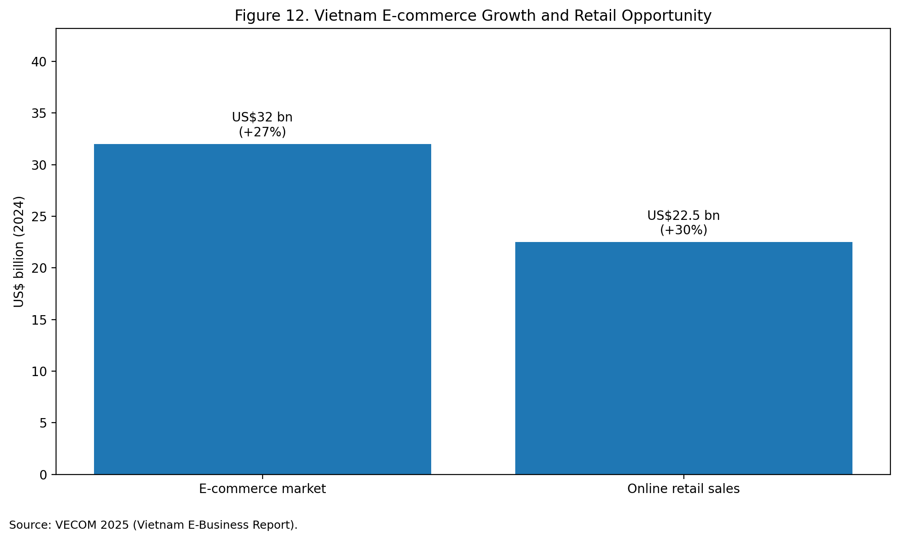
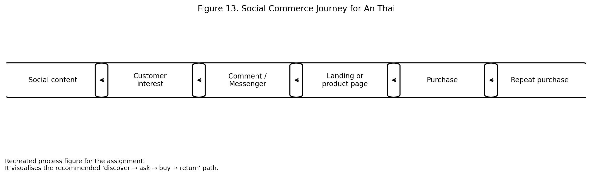

Social commerce · An Thai
The most suitable trend for An Thai is social commerce, not because it is fashionable, but because it fits both the Vietnamese market and the company’s current digital gap.
VECOM estimates that Vietnam’s e-commerce market reached US$32 billion in 2024, with 27 percent growth, while online retail sales reached US$22.5 billion, growing 30 percent. At the same time, Vietnam has a very large social media population. Together, these conditions make social commerce a commercially realistic opportunity rather than a speculative trend.
Social commerce is particularly relevant to An Thai for three reasons. First, coffee is a repeat-purchase category, so convenience and ease of reordering matter. Second, coffee is visually and culturally rich, which means it lends itself well to social storytelling. Third, An Thai already has the raw material for trust-based digital selling: origin story, manufacturing credibility, certifications, and varied product formats. In effect, the company already has the content inputs needed for social commerce, but it has not yet connected them into a smoother commercial path.
From a managerial viewpoint, social commerce for An Thai should be built around a simple sequence: discover → ask → buy → return. Social posts create discovery, Messenger or comments support the “ask” stage, owned-media pages help users evaluate products, and a clearer route to distributor or purchase converts interest into action. The opportunity is strong, but there are also challenges: platform dependence, resource demands for content and response, and the need for better tracking. Therefore, the best approach is not broad experimentation, but focused implementation around a few product lines and a small number of content themes.

| Trend element | Opportunity for An Thai | Risk | Management response |
|---|---|---|---|
| Social discovery | Strong visibility and storytelling | Content fatigue | Focus on a few repeatable themes |
| Messenger-led enquiry | Easy customer contact | Slow or inconsistent response | Create response process |
| Product-page transition | Supports consideration | Weak if landing pages are unclear | Improve destination pages |
| Repeat purchase | Strong fit for coffee category | Requires retention logic | Build remarketing / follow-up |
Social commerce is commercially attractive for An Thai, but only if operational response and landing-page clarity improve.
